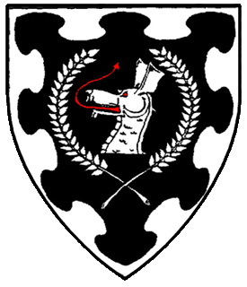

Baron of Dragon's Mist 
Encompassing Washington county to the west of Portland, Dragon's Mist includes Beaverton, Tigard, Hillsboro, Forest Grove, and more.
The youngest of the baronies in the Portland Metro area, Dragon's Mist
Regular Activities
Council
This monthly meeting is where the business side of the SCA is done. Whether it's planning for upcoming events, coordinating our regular activities, or voting for new officers of the branch, this is where it will happen.
Council is open to any who are interested in attending. Currently council is held the second Thursday of each month online via Zoom. If you are interested in attending, please contact the branch Seneschal, what we call the chapter president, at Dragonsmist.Seneschal@antir.org for information about joining the meeting
Martial Practices
The barony holds regular practices. FOr details about the time and location, check out the Practice Event.